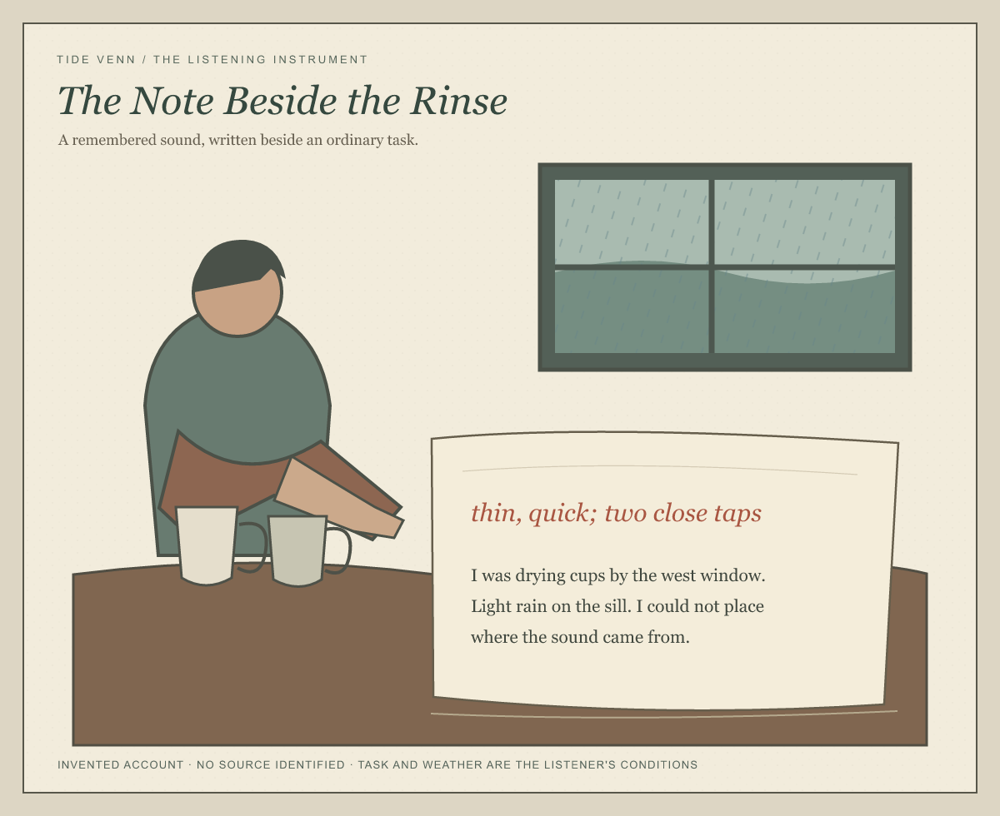

The Note Beside the Rinse
A remembered sound kept beside the ordinary task and weather that shaped one listener's account.

Reading the note
The larger rust-colored words are an invented listener's remembered description. The smaller words carry that listener's task, the weather, and the fact that the source remained unknown. Their difference comes from the handwriting's scale, color, and spacing on one unruled sheet.
The cups and rain situate the listener; neither is identified as the sound's cause. This is an artwork, not a transcription or a field survey.